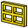

 Finestra |
| Posizione nel menu |
|---|
| Arch → Finestra |
| Ambiente |
| Architettura |
| Avvio veloce |
| W I |
| Vedere anche |
| Muro |
{kind=link}
Descrizione
L'oggetto Finestra è l'oggetto di base per tutti i tipi di oggetti "incorporabili", quali le finestre, le porte, ecc.. È progettato per essere un elemento indipendente, oppure "ospitato" all'interno di un altro componente come ad esempio in un muro. Esso ha una propria geometria, che può essere formata da diversi componenti solidi (ad es. il telaio o i pannelli interni), e definisce anche un volume da sottrarre all'oggetto ospite, in modo da creare un'apertura. Il volume da sottrarre viene calcolato automaticamente.
Le finestre sono basate su oggetti 2D chiusi, quali ad esempio, dei rettangoli di Draft o di Schizzo, ambienti che sono utilizzati anche per definire i componenti interni. L'oggetto 2D di base deve contenere diversi contorni chiusi, che possono essere combinati per formare dei pannelli pieni (richiedono un contorno) o delle cornici (richiedono più contorni).
Lo strumento finestra dispone anche di diversi preset, che permettono di realizzare porte o finestre da un elenco di parametri, senza la necessità di creare manualmente gli oggetti 2D di base e componenti. Le finestre possono anche essere creati da zero, disegnando prima un oggetto di base 2D.
{kind=link}
Nell'immagine precedente, la finestra viene prima costruita sulla base di un rettangolo di Draft, quindi viene inserita in un muro. L'operazione  Aggiungi una finestra a un muro intaglia automaticamente una apertura corretta nel muro che la ospita.
Aggiungi una finestra a un muro intaglia automaticamente una apertura corretta nel muro che la ospita.
{kind=link}
{kind=link}
L'immagine sopra mostra le fasi di costruzione di una finestra più complessa e basata su uno schizzo. Quando si entra nella modalità di modifica della finestra, è possibile creare i diversi componenti, impostare il loro spessore, quindi selezionarli e assegnare loro dei contorni con gli strumenti di Schizzo.
Utilizzo
Utilizzare i modelli preimpostati
- Facoltativamente, selezionare un oggetto Arch. Se non è selezionato alcun oggetto, la finestra viene inserita nell'oggetto che è sotto al mouse quando si posiziona la finestra.
- Premere il pulsante Finestra , oppure i tasti W e poi I
- Selezionare uno dei preset nella lista
- Compilare i parametri desiderati
- Premere il pulsante OK
Creare dall'inizio
- Opzionalmente, selezionare una faccia sull'oggetto Arch in cui si desidera inserire la finestra
- Passare nell'ambiente Sketcher
- Creare un nuovo schizzo
- Disegnare uno o più contorni chiusi
- Chiudere lo schizzo
- Tornare nell'ambiente Arch
- Premere il pulsante Finestra , o premere i tasti W e poi I
- Entrare in modalità Modifica facendo doppio clic sulla finestra nella vista ad albero, per regolare i componenti della finestra
Presets
Sono disponibili i seguenti modelli preimpostati:
Glass door
Simple door
Double-opening window
Fixed window
Single-opening window
Sash-opening window
{kind=link}
{kind=link}
{kind=link}
{kind=link}
{kind=link}
{kind=link}
Creare i componenti
La finestra può includere 3 tipi di componenti: i pannelli, le cornici e le persiane.
I pannelli e le persiane sono costituiti da un contorno chiuso che viene estruso. Le cornici sono formate da 2 o più contorni chiusi, entrambi estrusi, e quello più piccolo viene sottratto al più grande.
{kind=link}
È possibile accedere, creare, modificare ed eliminare i componenti di una finestra in modalità di modifica (doppio clic sull'oggetto finestra nella struttura ad albero).
I componenti hanno le seguenti proprietà:
- Name : Un nome per il componente
- Type: Il tipo di componente. Può essere "Frame", "Glass panel" "Solid panel", o "Louvres"
- Wires : Un elenco, separato da virgole, dei contorni su cui si basa il componente
- Thickness : Lo spessore di estrusione del componente
- Z Offset : La distanza tra il componente e la sua linea di base 2D
- Hinge: Ciò consente di selezionare un bordo nell'oggetto 2D di base, quindi impostare tale bordo come cerniera per questo componente e quelli successivi nell'elenco
- Opening mode: Se in questo componente o in qualsiasi altro precedente nell'elenco è stata definita una cerniera, l'impostazione della modalità di apertura consente alla finestra di apparire aperta o di visualizzare i simboli di apertura 2D in pianta o in elevazione.
{kind=link}
Opzioni
- Gli elementi Finestra condividono le proprietà e i comportamenti comuni di tutti i Componenti Arch
- Se la casella Auto-include nel riquadro delle azioni di creazione della finestra non è selezionata, la finestra non verrà inserita in nessun oggetto ospite durante la creazione.
- Per inserire la finestra selezionata in un muro, selezionare entrambi, poi premere il pulsante
 Aggiungi.
Aggiungi. - Per rimuovere la finestra selezionata da un muro selezionare la finestra, poi premere il pulsante Sottrai.
- Quando si utilizzano i preset, di solito conviene attivare lo Snap "Vicino", in questo modo è possibile agganciare la finestra a una faccia esistente.
- L'apertura creata da una finestra nel suo oggetto ospite è determinata da due proprietà: Hole Depth and Hole Wire (available in version 0.17
). Il numero del Hole Wire può essere selezionato nella vista 3D dal pannello delle finestre disponibili quando si fa doppio clic sulla finestra nella vista ad albero
- La Finestra può utilizzare i Multi-Materiali. La finestra cerca nei multi-materiali allegati gli strati di materiale con lo stesso nome per ciascuna delle sue componenti e se è presente lo utilizza. Ad esempio, un componente denominato "OuterFrame" cerca nel Multi-Materiale collegato
uno strato di materiale denominato "OuterFrame". Se trova questo materiale lo attribuisce al componente OuterFrame. Il valore dello spessore dello strato di materiale viene ignorato.
Porte
Le porte possono essere costruite con lo strumento Finestra, è sufficiente che nel disegno la base del contorno interno (porta) coincida con la base del contorno esterno (telaio), come nella seguente immagine:
{kind=link}
Aperture
Le porte e le finestre possono apparire parzialmente o completamente aperte nel modello 3D oppure si possono visualizzare i simboli di apertura sia in pianta che in altezza. Di conseguenza, queste appariranno anche nelle viste in 2D estratte e generate da Draft Viste 2D o TechDraw o Drawing. Per ottenere ciò, almeno uno dei componenti della finestra deve avere una cerniera e una modalità di apertura definita (vedere la sezione precedente "Componenti dell'edificio"). Quindi, usando le proprietà Opening, Symbol Plan o Symbol Elevation, si può configurare l'aspetto della finestra:
{kind=link}
Una porta che mostra da sinistra a destra come lavorano le proprietà Symbol Plan, Symbol Elevation e Opening
Proprietà
- DATIHeight: L'altezza di questa finestra
- DATIWidth: La larghezza di questa finestra
- DATIHole Depth: La profondità dell'apertura creata dalla finestra nel suo oggetto ospite
- DATIHole Wire: Il numero del contorno (wire) dell'oggetto base utilizzato per creare un'apertura nell'oggetto che ospita questa finestra. Questo valore può essere impostato graficamente facendo doppio clic sulla finestra nella vista ad albero. Impostando il valore 0, la finestra per creare il foro seleziona automaticamente il suo contorno più grande.
- Template:ProprietaDati/it : Una lista di stringhe (5 stringhe per ogni componente, che stabiliscono le opzioni dei componenti di cui sopra).
- DATILouvre Width: Se uno dei componenti è impostato su "Louvres", questa proprietà definisce la dimensione delle lamelle della persiana
- DATILouvre Spacing: Se uno dei componenti è impostato su "Louvres", questa proprietà definisce la spaziatura tra le lamelle
- DATIOpening: Tutti i componenti che hanno la loro modalità di apertura impostata e che hanno una cerniera definita in essi o in un componente precedente nell'elenco, appaiono aperti di una percentuale definita da questo valore
- DATISymbol Plan: Mostra il simbolo 2D di apertura nel piano
- DATISymbol Elevation: Mostra il simbolo 2D di apertura nell'elevazione
Script
Lo strumento Window può essere utilizzato nelle macro e dalla console python utilizzando la seguente funzione:
makeWindow (obj,[name])
- Crea una finestra sull'oggetto indicato
Esempio:
import Draft, Arch rect = Draft.makeRectangle(length=2,height=4) Arch.makeWindow(rect)